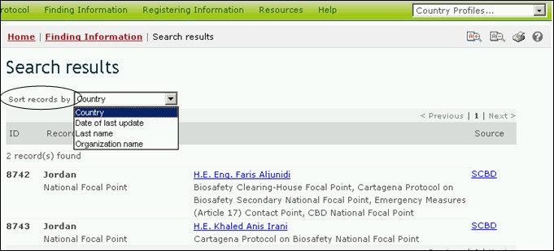

Pour changer la façon dont les résultats d’une recherche sont classés, l’utilisateur peut sélectionner l’une des options du menu déroulant Classer les résultat par qui figurent en haut de toute page de recherche des résultats. La liste des options comprendra seulement les options pertinentes pour le type de recherche faite par l’utilisateur.

Figure 65
Les options de classement qui peuvent être disponibles aux utilisateurs sont les suivantes :
Pays: Affiche les résultats de la recherche alphabétiquement par nom du pays ;
Date de la dernière mise à jour: Affiche les résultats de la recherche selon la date d’addition ou de mise à jour, mettant les registres modifiés plus récemment en premier lieu ;
Nom de famille: Affiche les résultats de la recherche alphabétiquement selon le nom de famille de la personne ou point de contact ;
Trait d’OVM: Affiche les résultats de la recherche alphabétiquement selon le trait ou la caractéristique présentée. (Pour une liste complète des traits présentés, voir le domaine « traits d'OVM » dans le Thésaurus au CEPRB).
Nom du gène : Affiche les résultats de la recherche alphabétiquement par nom du gène inséré. (Pour une liste et une description complètes des gènes insérés, voir le Registre des Gènes) ;
Nom de l’organisme: Affiche les résultats de la recherche alphabétiquement par nom de l’organisme parental, récepteur ou donneur (Pour une liste et une description complètes des organismes dans le CEPRB, voir le Registre des Organismes) ;
Nom de l’organisation: Affiche les résultats de la recherche alphabétiquement par nom de l’organisation (les organisations peuvent comprendre les autorités nationales compétentes ou des organisations de biosécurité) ;
Date de commencement: Affiche les résultats de la recherche par la date à laquelle les projets ou les opportunités de création de capacité commenceront ;
Domaine du sujet: Affiche les résultats de la recherche regroupés selon le domaine du sujet abordé (par ex. type d'OVM, ou utilisation prévue) ;
Statut taxonomique: Affiche les résultats de la recherche alphabétiquement selon le nom scientifique de l’organisme ;
Technique utilisée: Affiche les résultats de la recherche alphabétiquement selon la technique utilisée pour introduire la modification ;
Titre: Affiche les résultats de la recherche alphabétiquement par le titre du registre ;
Type de registre: Affiche les résultats de la recherche regroupés selon le type de registre ;
Identification unique: Affiche les résultats de la recherche alphanumériquement par code d’identification unique. (Pour une liste et une description complètes des codes d’identification unique, voir le Registre des OVM-IDU.)